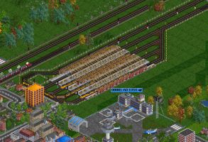

Why you should download OpenTTD
I've only really been playing OpenTTD on and off for about a year, but it's still managed to be one of my favorite games. In a world
full of EAs and Bethesdas looking to drain every last dollar from your bank account, OpenTTD doesn't need to charge you for anything.
Along with that, it's actually a really great game for those who enjoy business, trains, thinking logically, making money, and more. Once
you've gotten sick of the included vehicles, landscape, industries, music, etc. you can also download a colossal number of mods from the
built in mod loader.

How to play:
Unlike pretty much every single unnecessarily violent and profane game made today, Transport Tycoon provides clean, intelligent,
and family-friendly game play. The goal of the game is to run a successful transport company from 1950 to 2050. You gain more money by
building logically-placed bus/truck stops, train lines, ship docks, and airports. You can then purchase a wide range of vehicles using
your company's capital and begin moving passengers or cargo from place to place. Sounds simple enough, right?
Well, it isn't that simple
You still must manage your funds at the same time as you attempt to build more infrastructure and as you build more, your expenses
rise. At the same time the train mechanics can be confusing to new players, and the game has a semi-steep learning curve. Still, all of these
factors contribute to making Open TTD very popular among all those whom enjoy a good challenge. Unlike the slew of uninspired and over hyped
money-vacuums that are released today, Open TTD encourages critical thinking and problem solving.
"Can I run it on a (insert system here)?"
Since Open TTD is both very popular and open source, it has been ported to virtually every semi-modern operating system and CPU architecture.
You can even play it in your browser, if that's your sort of thing (see my links page). Not only that, but Open TTD also runs pretty well since it
lacks any 3D graphics.

Page last updated on: Feb 17th, 2019